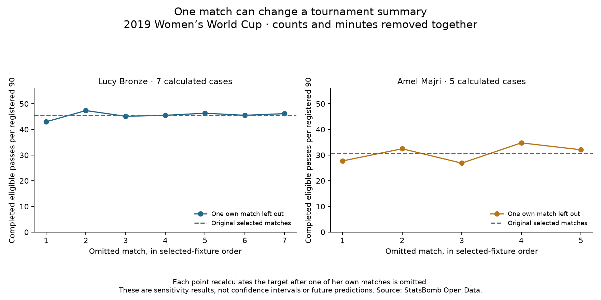

Football analyst training · Recruitment phase · Lesson 72
Does one match change the summary much?
Read: Soccermatics Lesson 3 — Statistical scouting → Comparison: percentile rankings.
We have one tournament summary per player. Now we check how the result changes when we leave out one of her matches.
What we did
- Remove one selected match's player completions, same-window team completions and registered minutes.
- Recalculate the activity rate and involvement share.
- Repeat, leaving out each own match once.
We completed 145 calculations for all 35 players. Each case removes one of the target's own matches; the other players' original profiles stay fixed for percentile comparison.
Two examples
- Bronze: original 45.57 completions per 90. Her seven recalculated values range from 42.99 to 47.36.
- Majri: original 30.70. Her five recalculated values range from 26.88 to 34.77.

These are observed recalculations, not confidence intervals or predictions of future performance. A wider range does not by itself prove a player is less reliable: sample sizes, opponents and match contexts differ.
Keep the question precise
For percentile checks, we keep the original 35-player comparison group and other players' values fixed. Even a player originally selected with three starts remains in this exercise with two matches left. We are testing her original profile's sensitivity, not selecting a new recruitment pool or deleting that fixture from every player's data.
Practice: if we remove one match's passes, should we keep its playing minutes in the denominator?
No. Remove the same match's counts and registered minutes together. Otherwise the numerator and denominator cover different exposures.
Run 72_fullback_match_sensitivity.py in Spyder. The report and saved evidence identify every omitted match and the remaining counts. This is an assisted custom sensitivity extension; ask your teacher about any unclear comparison.